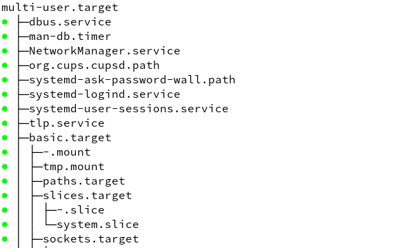

Tmux is a terminal software for multi-windows.
Tmux basic commands
Prefix: ^B
Short screen copy and paste has no difference with that in uxterm.
Long screen copy and paste
Default
^B + [ to enter copy mode
select and quit copy mode
Use ^B + ] to paste
Use vi-copy mode
Add the lines into ~/.zshrc1
2export EDITOR=vim
export VISUAL="$EDITOR"
Now you can use Space to start selection, Enter to end selection and q to quit copy mode.
To system clipboard
For XTerm, add this line into ~/.Xresources to enable:1
xterm*disallowedWindowOps: 20,21,SetXprop
Now, you can use ^B + [ to enter copy mode, vi style to select and copy.Then go to anywhere to paste.
An experiment of autostart tmux service under systemd
1 | [Unit] |
Taking care of multi-user.target, a target is used for starting a group of units. That is to say, when starting a target, all units in this target will be started by systemd. We can check all the units included in multi-user.target by systemctl list-dependencies multi-user.target

We can see that almost every autostart service set by our own user is included in multi-user.target. So this is an important systemd target that is run default when starting Linux.
Then create and edit the file /etc/systemd/system/tmux@.service1
2
3
4
5
6
7
8
9
10
11[Unit]
Description=Start tmux in detached session
[Service]
Type=forking
User=%I
ExecStart=/usr/bin/tmux new-session -s %u -d
ExecStop=/usr/bin/tmux kill-session -t %u
[Install]
WantedBy=multi-user.target
Then enable and start user service:1
2systemctl enable tmux@shane.service
systemctl start tmux@shane.service
References
- Scroll shell output with mouse in tmux: https://superuser.com/questions/210125/scroll-shell-output-with-mouse-in-tmux
- Tmux tutorial: https://github.com/tmux/tmux/wiki/Getting-Started#copy-and-paste